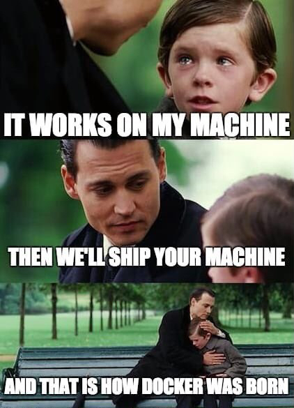

Agenda
- Introduction
- Understanding Containers
- Friction-Free Development
- Setting Up Podman
- Podman in Action
- Core Podman Concepts
- Advanced Container Concepts
- Kubernetes Integration
- Compatibility and Limitations
- Best Practices and Tips
- Q&A
Brief History of Virtualisation
Virtualisation vs Containerisation

Virtualisation vs Containerisation
Virtualisation - IIS days?

Containers - Cloud, Serverless, just nice
What are Containers?
- Lightweight, standalone, executable packages
- Include everything needed to run an application
- Code, runtime, system tools, libraries, configuration etc
- They're all kept in layers, small, isolated & efficient
- Consistent environment across dev, test and production
- Isolate software from its surroundings
- Portable (*) and easy to scale - when done right
- Develop, ship, and run applications.
- Part of the Moby Project.
- Acquired by Mirantis in 2019.
- Commercial License required for Enterprise.
The Birth of Docker
- Daemonless container engine.
- Drop-in replacement for Docker.
- Part of the Red Hat ecosystem.
- Open Source and Free.
Starting a new project?
$ git clone https://github.com/veridian/jabberwocky.git
$ cd jaberwocky
$ more getting-started.md Please install the following dependencies: * SQL Server 2007 (you'll need our MSDN License) * Redis Server (get this from our K:\ drive) * RabbitMQ Server (but find v2.4.1) * IIS 10 /w ASP.NET v4.1.2 (ask Jimmy for admin perms) * WCF Runtime Utilities * SQL Management Studio (not the latest tho) * Visual Studio 2019 with SQL Server Tools ... Add your username to AD under group DEV-PEEPS Email support for access to the test Mailserver
What the heck!
What is Friction-Free Development?
- Automate & Script as much as possible.
- Fast and easy onboarding.
- Minimal setup, less dependencies, no installs
- Minimal configuration - sane defaults.
- Easy to tear down and rebuild
- Reproducible builds
- Most times just
$ ./setup-local.sh $ podman compose up -d
less>more
Why Containerise for Local Development?
- Reduce costs - Minimise cloud resource usage during development
- Reduce friction - Consistent environment across team members
- Improve productivity - Quick setup and teardown of development environments
- Enhance collaboration - Easily share and reproduce development setups
- Streamline CI/CD pipelines - Test in environments mirroring production
- Facilitate microservices development - Isolate and manage individual services locally
- Enable easy scaling simulation - Test application behavior under various loads
Containerization: Empowering developers with efficient, consistent, and scalable local environments
What can we containerise?
- Databases - Postgres, MySQL, SqlServer, CosmosDB
- Web Servers
- API Servers - mock Services etc.
- Message Brokers - Kafka, ActiveMQ, Amazon SQS
- Caching Servers - Redis
- Monitoring Tools - Logstash, OpenTelemetry, Seq
- CI/CD Tools
- Development Tools
- ... and more
Why it's not the silver bullet (Cloud: Azure)
-
Not all services are containerised - Eg. Azure ServiceBus
...the bus, the bus is coming! (EoY 2024) - Not all services are container friendly
- Not all services are container ready
- Not all services are container optimised
- No 'localstack' for Azure - yet!
Why it's not the silver bullet (Cloud: AWS)
-
Not all services are containerised - Eg. AWS Lambda
...but you can use AWS SAM CLI for local Lambda development - Not all services are container friendly - Eg. Amazon S3
- Not all services are container ready - Eg. Amazon DynamoDB
- Not all services are container optimised - Eg. Amazon RDS
-
Some services have no local equivalent - Eg. AWS CloudFormation
...though tools like LocalStack can help simulate some AWS services
Setting up Podman
# Install Podman with Choco
> choco install podman-desktop
# Install Podman with Scoop
> scoop bucket add extras
> scoop install podman-desktop
# Install Podman with Winget
> winget install -e --id RedHat.Podman-Desktop
# Run a container
> podman run -it --rm alpine /bin/sh
# Install Podman with Brew
> brew install podman-desktop
# Run a container
> podman run -it --rm alpine /bin/sh
# Install Podman (Debian variants)
> sudo apt install podman
# Install Podman via Flatpak
> flatpak remote-add --if-not-exists --user flathub https://flathub.org/repo/flathub.flatpakrepo
> flatpak install --user flathub io.podman_desktop.PodmanDesktop
# Install Podman via Snap
> sudo snap install podman-desktop
# Run a container
> podman run -it --rm alpine /bin/sh
Podman Compose
# Install Podman Compose
> podman plugin install podman-compose
# Check the version
> podman compose version
# Run a Compose file
> podman compose up -d
Lazy Docker
 @jesseduffield/lazydocker
@jesseduffield/lazydocker
Lazy Docker
Yeah you want this...
# Windows
> scoop install lazydocker
> choco install lazydocker
# macOS
> brew install jesseduffield/lazydocker/lazydocker
# Linux
> sudo snap install lazydocker
> curl https://raw.githubusercontent.com/jesseduffield/lazydocker/master/scripts/install_update_linux.sh | bash
Using Podman in our workflow
Create a Podman Stack (Fatman Scoop!)
- Azurite emulates Azure Blob, Queue, and Table storage
- CosmosDB Emulator provides a local NoSQL database
- Azure SQL Edge offers a lightweight SQL Server for local development
- Web application container connects to all services
- Persistent volumes ensure data is retained between restarts
- Environment variables configure service connections
Azure Compose Stack
compose.yml
version: '3.8'
services:
azurite:
image: mcr.microsoft.com/azure-storage/azurite
ports:
- "10000:10000" # Blob storage
- "10001:10001" # Queue storage
- "10002:10002" # Table storage
volumes:
- azurite_data:/data
command: "azurite --blobHost 0.0.0.0 --queueHost 0.0.0.0 --tableHost 0.0.0.0"
cosmosdb:
image: mcr.microsoft.com/cosmosdb/linux/azure-cosmos-emulator
ports:
- "8081:8081"
environment:
- AZURE_COSMOS_EMULATOR_PARTITION_COUNT=10
- AZURE_COSMOS_EMULATOR_ENABLE_DATA_PERSISTENCE=true
volumes:
- cosmosdb_data:/data/db
azuresql:
image: mcr.microsoft.com/azure-sql-edge
environment:
- ACCEPT_EULA=1
- MSSQL_SA_PASSWORD=YourStrong@Passw0rd
ports:
- "1433:1433"
volumes:
- azuresql_data:/var/opt/mssql
webapp:
image: your-webapp-image:latest
ports:
- "8080:80"
environment:
- AzureWebJobsStorage=DefaultEndpointsProtocol=http;AccountName=devstoreaccount1;...
- CosmosDb__Endpoint=https://cosmosdb:8081
- CosmosDb__Key=C2y6yDjf5/R+ob0N8A7Cgv30VRDJIWEHLM+4QDU5DE2nQ9nDuVTqobD4b8mGGyPMbIZnqyMsEcaGQy67XIw/Jw==
- SqlConnectionString=Server=azuresql,1433;Database=MyDatabase;User Id=sa;Password=YourStrong@Passw0rd;
depends_on:
- azurite
- cosmosdb
- azuresql
volumes:
azurite_data:
cosmosdb_data:
azuresql_data:Running the Azure Services Stack
# Start the stack
podman compose up -d
# View running containers
podman compose ps
# Stop and remove the stack
podman compose down
# Stop the stack but keep volumes
podman compose down --volumesUpdate our configs!
{
"IsEncrypted": false,
"Values": {
"AzureWebJobsStorage": "UseDevelopmentStorage=true",
"AzureWebJobsDashboard": "UseDevelopmentStorage=true",
"SqlConnectionString": "Server=localhost,1433;Database=master;User Id=sa;Password=yourStrong(!)Password;"
"CosmosDBConnectionString": "AccountEndpoint=https://localhost:8081/;AccountKey=C2y6yDjf5/R+randomKey+randomKey+randomKey+randomKey+randomKey==;"
}
}
Party!
- You've got a local Azure stack!
- No more cloud costs for dev!
- Easy to share with team!
- Easy to tear down and rebuild!
- Easy to scale!
- But wait, hangon...
Seeding data for Databases: Postgres
# Seed data into Postgres
podman exec -i postgres psql -U postgres -d mydatabase < /data/db/seed.sql
postgres:
image: postgres
...
ports:
- "5432:5432"
volumes:
- ./db/_init.sql:/docker-entrypoint-initdb.d/init.sql
Seeding data for Databases: Azure SQL Edge
# Seed data into Azure SQL Edge
podman exec -i azuresql /opt/mssql-tools/bin/sqlcmd -S localhost -U sa \
-P YourStrong@Passw0rd -d MyDatabase -i /data/db/seed.sql
Seeding data for Databases: Cosmos
# Seed data into CosmosDB
podman exec -i cosmosdb mongoimport --db PlantDb \
--collection Plants --file /data/db/seed.json
Podman Concepts
- Container Environment Variables
- Container Volumes
- Container Layers
Environment Variables in Containers
.env.example
COSMOS_PORT=8089
SQL_PORT=1433
WEBAPP_PORT=8080
- Key-value pairs for configuration
- Separate configuration from code
- Enable easy customization without rebuilding
- Crucial for maintaining security (e.g., storing secrets)
- Support different environments (dev, staging, prod)
Setting Environment Variables
# At runtime
podman run -e MY_VAR=my_value my-image
# In Compose file
environment:
- MY_VAR=my_value
# Using .env file with Podman
env_file:
- .env
# Using .env file with Compose
podman-compose --env-file ./.env upEnvironment Variables in Compose
- Use a
.env.exampleto describe the default variables .env.exampleis in the repo- Exclude
.envin version control
.gitignore:
.env
Avoid secrets leaking to VCS
Best Practices for Environment Variables
- Use for configuration that varies between environments
- Never store secrets in Dockerfiles or source control
- Use
.env.examplefor env variables in VCS - Document all required environment variables & put in template
- Provide default values for non-sensitive configurations
- Use
.envfiles for local development, ignored in VCS - In production, use secrets management systems
Accessing Environment Variables in Code
# Python example
import os
db_host = os.environ.get('DB_HOST', 'localhost')
db_port = int(os.environ.get('DB_PORT', 5432))
db_name = os.environ['DB_NAME'] # Raises KeyError if not set// Node.js example
const dbHost = process.env.DB_HOST || 'localhost';
const dbPort = parseInt(process.env.DB_PORT || '5432', 10);
const dbName = process.env.DB_NAME;Running the Updated Azure Services Stack
# Create a .env file
echo "WEBAPP_PORT=9000" > .env
echo "SQL_SA_PASSWORD=MySecurePassword123!" >> .env
# Start the stack with custom environment
podman-compose --env-file .env up -d
# Override a variable at runtime
podman-compose run -e WEBAPP_PORT=8080 webapp
# View environment variables of a running container
podman exec webapp printenv- Have a
.env.exampleto find variables with sane defaults
Container Volumes
- Volumes are the preferred mechanism for persisting data in containers
- Independent of container lifecycle - data persists even when container is removed
- Can be shared and reused among multiple containers
- Managed by the container runtime (e.g., Podman, Docker) for better portability
- Provide better performance for I/O operations compared to bind mounts
- Support different drivers for various storage backends
Creating volumes
# Create a volume
> podman volume create pgdata
# Run a container with a volume
> podman run -v pgdata:/var/lib/postgresql/data postgres:16
version: '3.8'
services:
db:
image: postgres:16
environment:
...
volumes:
- pgdata:/var/lib/postgresql/data
volumes:
pgdata:
Working with Volumes in Podman
# Create a volume
podman volume create myvolume
# List volumes
podman volume ls
# Inspect a volume
podman volume inspect myvolume
# Use a volume in a container
podman run -v myvolume:/app/data myimage
# Remove a volume
podman volume rm myvolumeVolume Drivers in Podman
- local: Default driver, stores data on the host filesystem
- tmpfs: Temporary in-memory storage
- Third-party drivers can be added for cloud storage, etc.
# Create a tmpfs volume
podman volume create --driver tmpfs mytmpfs
# Use a specific driver
podman volume create --driver local mylocalVolume Management in Podman Compose
version: '3'
services:
webapp:
image: mywebapp
volumes:
- appdata:/app/data
- /host/path:/app/config:ro
volumes:
appdata:
driver: local
driver_opts:
type: 'none'
o: 'bind'
device: '/path/on/host'Best Practices for Podman Volumes
- Use volumes for persistent data storage
- Implement regular backups of important volumes
- Use read-only mounts when possible for security
- Be cautious with host mounts in production environments
- Use volume labels for easier management and automation
- Consider using separate volumes for different types of data (e.g., logs, databases)
- Use
tmpfsfor high-io scenarios
Binding Host Volumes in Podman
- Mounts a specific path from the host into the container
- Provides direct access to host files / folders
- Useful for development and persistent data storage
- Can be read-only or read-write
- May require careful permission management
Basic Host Volume Binding
# Mount a host directory to a container
podman run -v /path/on/host:/path/in/container:Z my-image
# Mount with read-only access
podman run -v /path/on/host:/path/in/container:ro,Z my-image
# Use a relative path (current directory)
podman run -v ./local-data:/app/data:Z my-imageThe :Z option relabels the content for SELinux
Host Volumes in Podman Compose
version: '3'
services:
webapp:
image: my-webapp
volumes:
- ./config:/app/config:ro,Z
- ./logs:/app/logs:Z
database:
image: postgres:16.4
volumes:
- pgdata:/var/lib/postgresql/data:Z
volumes:
pgdata:Mixing host volumes and named volumes
Development Example: Live Code Reloading
version: '3'
services:
node-app:
image: node:14
working_dir: /app
volumes:
- ./src:/app/src:Z
- ./package.json:/app/package.json:Z
command: npm run dev
ports:
- "3000:3000"

Best Practices for Host Volumes
- Use for development environments and quick prototyping
- Be cautious with permissions, especially in production
- Use read-only mounts when possible for improved security
- Consider SELinux implications and use :z or :Z options
- Prefer named volumes for production deployments
- Document host volume requirements for your application
Host Volumes vs Named Volumes
Host Volumes
- Direct access to host filesystem
- Easy file sharing between host and container
- Ideal for development environments
- Can have permission issues
- Less portable across different hosts
Named Volumes
- Managed by Podman
- More portable and easier to backup
- Better performance in some cases
- Ideal for production use
- Easier to manage with Podman commands
Practical Example: Web Server with Host Volume
# Create a simple HTML file
echo "<h1>Hello from host volume!</h1>" > index.html
# Run Nginx with the current directory mounted
podman run -d --name nginx-host-volume \
-v ${PWD}:/usr/share/nginx/html:ro,Z \
-p 8080:80 \
nginx:alpine
# Access the website
curl http://localhost:8080
# Update the file on the host
echo "<h1>Updated content!</h1>" > index.html
# Check the updated content
curl http://localhost:8080Container Layers
Each layer is read-only except the top writable layer
Container Layers
- Layers are cached and reusable across containers
- Reduces storage usage and speeds up builds
- Changes are stored in the writable layer
- Layers use Copy-on-Write (CoW) strategy
- Efficient for shipping and versioning
Layers in Action
Layers in Action
Advanced Container Concepts
- Container Networking
- Advanced Layer Management
- Container Security / Secrets
- Container Orchestration
- Container Monitoring
Container Networking
- Bridge: Default network mode, creates isolated network for containers
- Host: Shares host's network stack, higher performance but less isolation
- Overlay: Enables communication between containers across multiple hosts
- Macvlan: Assigns MAC address to container, appears as physical device on network
- None: Disables networking for maximum isolation
- DEMO: demo/advanced-networking
Advanced Layer Management
- Multi-stage builds to optimize final image size
- Layer caching strategies for faster builds
- Squashing layers to reduce image size
- Using .dockerignore to exclude unnecessary files
- Leveraging BuildKit for advanced caching and concurrent building
- DEMO: demo/layer-demo[1...4]
Podman Secret Management
- Create secrets:
podman secret create - List secrets:
podman secret ls - Inspect secrets:
podman secret inspect - Use in containers:
--secretflag
podman secret create my_secret my_secret.txt
podman run --secret my_secret myimagePodman System Connection
- Manage remote Podman instances
- Add connections:
podman system connection add - List connections:
podman system connection list - Use remote connection:
podman -r <name> <command>
podman system connection add myserver --identity ~/.ssh/id_rsa user@example.com
podman -r myserver imagesTips and Tricks for Podman (Non-Kubernetes)
- Use
podman-composefor Docker Compose compatibility - Leverage
podman auto-updatefor automatic container updates - Utilize
podman generate systemdfor service management - Explore
podman image signfor image signing and verification - Use
podman save/loadfor image portability
Local Kubernetes Development with Podman
- Test K8s deployments locally
- Simulate multi-container pods
- Validate container interactions
- Prototype K8s manifests
Kubernetes-like Features in Podman
- Pod-native operations
- Network namespaces similar to K8s pods
- Container health checks
- Resource constraints (CPU, memory)
Podman and Kubernetes Integration
- Generate Kubernetes YAML:
podman generate kube - Play Kubernetes YAML:
podman play kube - Create pods:
podman pod create - Manage pods:
podman pod start/stop/rm
Compatibility Issues and Limitations
Docker Compose vs Podman Compose
- Volume syntax differences
- Network mode limitations
- Some Docker-specific options not supported
- Differences in environment variable expansion
# Docker Compose
volumes:
- /host/path:/container/path
# Podman Compose
volumes:
- /host/path:/container/path:ZPerformance Differences
- Rootless mode may have slower I/O performance
- Networking in rootless mode can be slower
- Volume mounts may have higher overhead in rootless mode
- Container startup time may vary
Network Limitations in Rootless Mode
- Limited access to low-numbered ports (<1024)
- NAT slirp4netns used instead of bridge networking
- Potential issues with container-to-host communication
- Some network drivers may not be available
# Workaround for low-numbered ports
podman run --network slirp4netns:port_handler=slirp4netns ...